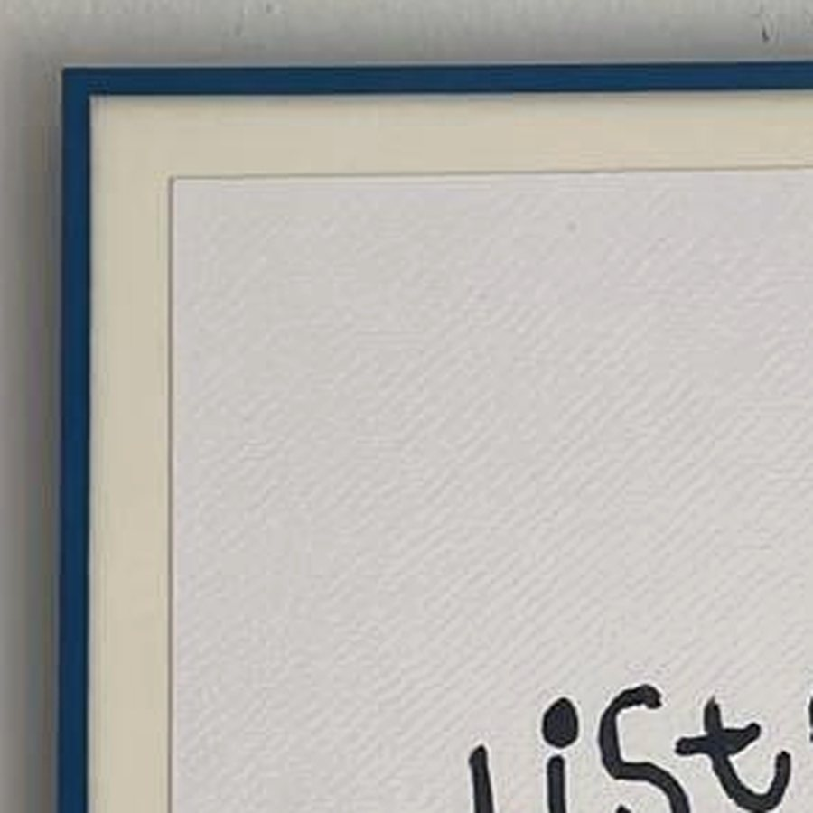

Um diagnóstico é nome comum. Luísa é nome próprio.
Quadros com a letra da Luísa, 14 anos. Cada frase é escrita à mão, em papel, e emoldurada para viver na tua parede.
escrito à mão em papel cada peça é única Natal 2026 a frase é tua, a letra é dela escrito à mão em papel cada peça é única Natal 2026 a frase é tua, a letra é dela escrito à mão em papel cada peça é única Natal 2026 a frase é tua, a letra é dela escrito à mão em papel cada peça é única Natal 2026 a frase é tua, a letra é dela
Colecção Natal 2026.
Cinco frases, cinco peças únicas. Quatro estão prontas a enviar; a primeira já encontrou casa. Exactamente como saíram da mão dela, ortografia incluída.
Na versão Premium, a moldura também é de papel, feita à mão, peça a peça: papel azul, passe-partout creme, papel branco texturado, costas em kraft com argola para pendurar. Leva 3 a 4 meses.
N.º 01 · listen to the silence · vendido

Canto · papel azul + passe-partout cremePapel branco texturadoA aresta, à luz
(01) — ManifestoLê-se em 2 minutos
Há um traço que não pede licença para existir.
Não é caligrafia de escola, nem letra de marca desenhada em laboratório. É a letra da Luísa: viva, inequívoca, dela.
Esta marca não nasceu para explicar um diagnóstico, nem para pedir nada a ninguém.
Nasceu porque essa letra, e a forma como a Luísa habita o mundo, tem uma beleza que as pessoas querem ter perto.
Numa parede. Numa frase que importa. Num objecto que se escolhe porque se deseja, não porque se deve.
O tempo faz parte da peça.
Aqui, tudo anda ao ritmo da Luísa.* Avisa-se antes, mostram-se os passos por ordem e espera-se que ela venha. Forçar é bloquear; esperar é o que a deixa ir mais longe. Por isso cada quadro demora o que tem de demorar. A espera não é um atraso. É a maneira como a peça se faz.
É a Luísa que pede para vir para a mesa. Escolhe a frase, pega na caneta, e pode sempre dizer que não. Ninguém lhe pede pressa. A letra é dela. O nome também.
* A Luísa tem uma alteração rara no gene STXBP1. Não é o assunto desta marca, mas faz parte de quem ela é: é também por isso que, aqui, o ritmo é o dela.
30”
(02) — O manifesto em 30 segundos
minifesto.Porque 30 segundos não é um manifesto.
A Luísa tem 14 anos e uma letra que não se parece com nenhuma outra. Estamos a construir uma marca a partir desse traço: quadros, frases e pósteres que se compram porque são bonitos. Um dia roupa. Outro, quem sabe, o mundo. O lucro faz a marca andar e dá à Luísa uma ocupação, autonomia e um futuro.
 N.º 02 · come away with me
N.º 02 · come away with me